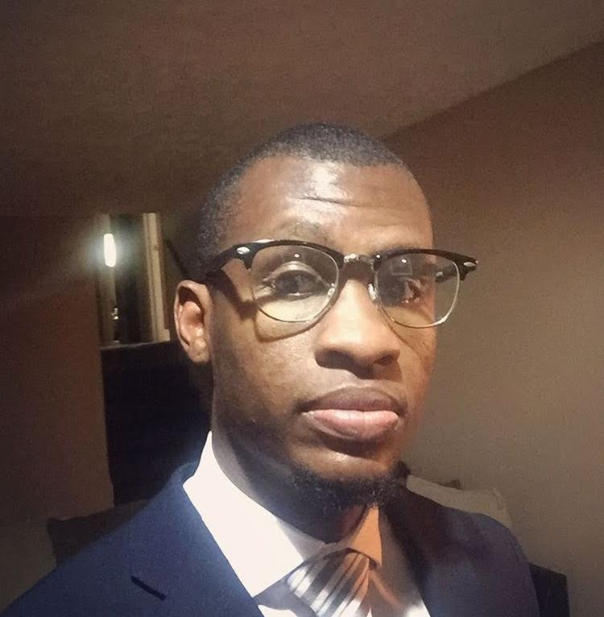

About Me
My name is Larry Fuller Jr and I started my career by earning a Bachelor's degree in Psychology from Georgia Southern University. After completing my undergraduate degree, I attended Argosy University in 2004 and earned my Masters' in Professional Counseling. Throughout my career I have continued to move upwards in leadership. I started as being a basic licensed clinician and I've worked my way up to being the Program Manager of a 2 million dollar program.
Upon reaching this point of my career, I still have a creative side that remains undeveloped. Therefore, I'm embarking on a journey to become a Full-Stack Developer through Georgia Tech. It has always been a dream of mine to attend the university in some aspect.